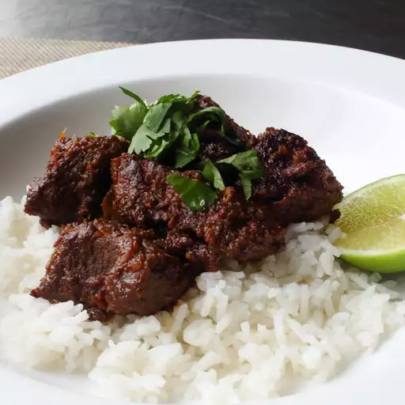

Rendang Recipe

Special beef recipe from Indonesia which is really tasty and there is a special technique which softens the beef until the texture is like chicken.
Ingredients :
- 1 pound beef round, diced
- 2 tablespoons cooking oil
- ¾ cup dried shrimp, minced
- 1 clove garlic, minced
- 1 tablespoon chopped lemon grass
- 2 onions, chopped
- 1 ¾ cups coconut milk
- ½ cup red curry paste, or to taste
- 3 tablespoons turmeric powder
- 1 fresh red chile pepper, finely chopped
- 1 bunch fresh cilantro, chopped
Steps :
- This first step is to soften the beef. Place the beef in a medium saucepan, and add enough water to cover the meat. Cover, and simmer over low heat for at least an hour. Remove the beef from water, and set aside.
- Heat the oil in a wok over medium-high heat. Add in the garlic and dried shrimp, and stir fry for a few seconds before stirring in the lemon grass and onions. Reduce heat to medium, and stir in coconut milk, red curry paste, turmeric, and chile pepper. Mix in the beef, and cover the wok. Simmer for 10 minutes over medium heat.
- Stir in the cilantro just before serving. Save some cilantro for garnishing on top if you like.
Back